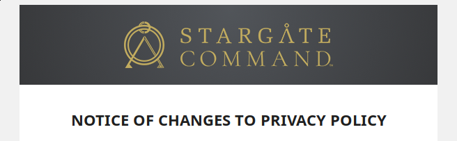

DSGVO - Alles Schall und Rauch?
Speaker
Name: Simon Lackerbauer
Mehr ist mir nicht erlaubt zu sagen, und mehr ist euch nicht erlaubt zu wissen.
Speaker
Simon Lackerbauer
Rechtliche Grundlagen
Systematische Einordnung
- früher: BDSG (deutsches Bundesgesetz)
- seit 25.05.2018: Datenschutz-Grundverordnung (DSGVO/GDPR) und BDSG-neu via DSAnpUG-EU
voller Name: Verordnung (EU) 2016/679 des Europäischen Parlaments und des Rates vom 27. April 2016 zum Schutz natürlicher Personen bei der Verarbeitung personenbezogener Daten, zum freien Datenverkehr und zur Aufhebung der Richtlinie 95/46/EG
Was ist eine EU-Verordnung?
- Es gibt EU-Richtlinien und EU-Verordnungen
- Richtlinien sind ... exactly what it says on the tin. Mehr oder weniger grobe Richtlinien, die jeder EU-Mitgliedsstaat selbst implementiert
- Verordnungen gelten direkt in allen Mitgliedsstaaten (und gem. EWR-Abkommen nach Inkorporierung auch in Island, Liechtenstein und Norwegen)
- Alle 24 Versionen in den 24 Amtssprachen gelten gleichberechtigt überall (what could possibly go wrong?)
Und deshalb ändert sich jetzt alles?
Antwort: Nein.
Ein Großteil des bisherigen Datenschutzrechts gilt im Grundsatz fort. Die allgemeine Aufbruchstimmung rührt mehr daher, dass viele Unternehmen vor Inkrafttreten der DSGVO geltendes Recht verletzt haben, dies aber nicht geahndet wurde. Die allgemeine Befürchtung ist nun, dass Verstöße unter der DSGVO schneller, intensiver und mit Konsequenzen verfolgt werden.
Weiterhin sind dort, wo sich tatsächlich Änderungen ergeben, diese häufig noch komplex oder schwer interpretierbar. Dadurch entsteht Rechtsunsicherheit.
Aufbau DSGVO
- Am Anfang stehen 173 sog. "Erwägungsgründe"
- Dann gibt es 99 Artikel in 11 Kapiteln
- Die "wichtigsten" Abschnitte für Normalsterbliche: Kapitel 2 ("Grundsätze") und Kapitel 4 ("Verantwortlicher und Auftragsverarbeiter")
- Eine recht schöne Übersicht über die deutschen und englischen Fassungen der DSGVO gibt es unter dsgvo-gesetz.de
Geltungsbereich
- Datenschutzrecht bezieht sich immer und ausschließlich auf "personenbezogene Daten"
- Personenbezug liegt aber fast immer vor, wenn zumindest irgendjemand in der Lage ist, ein Datum einer natürlichen Person zuzuordnen (bekanntes Beispiel: IP-Adressen)
- Gilt für alle Verarbeitungen, die entweder in der EU stattfinden, oder die Daten von EU-Bürgern betreffen.
Und was ändert sich jetzt wirklich?
Verarbeitung
- bezeichnet "[...] das Erheben, das Erfassen, die Organisation, das Ordnen, die Speicherung, die Anpassung oder Veränderung, das Auslesen, das Abfragen, die Verwendung, die Offenlegung durch Übermittlung, Verbreitung oder eine andere Form der Bereitstellung, den Abgleich oder die Verknüpfung, die Einschränkung, das Löschen oder die Vernichtung"
- (vgl. BDSG a.F.: Erhebung, Verarbeitung, Nutzung)
Datenschutzbeauftragter
- Für die meisten kleinen und mittleren Unternehmen in Deutschland laut DSGVO nicht mehr vorgesehen
- Aber: BDSG n.F. führt die alten deutschen Regelungen mit mehr als 9 Beschäftigten fort (§ 38 BDSG)
Frage: Muss ich bei meiner App die DSGVO beachten?
Antwort: Ja.
Ausnahme: Statischer Content ohne Interaktionsmöglichkeit und keinerlei Logging.
Frage: Aber was wir entwickeln, wird nur intern von Mitarbeitern des Kunden genutzt. Da gilt die DSGVO also dann nicht?
Antwort: Doch.
Mitarbeiterdaten sind personenbezogene Daten. Selbst Kürzel/IDs/etc. sind personebezogene Daten, weil der Kunde sicher irgendwo die Möglichkeit hat, die ID einem Mitarbeiter zuzuordnen.
Weitere Fragen zum Geltungs-/Anwendungsbereich?
Grundsätze des Datenschutzrechts
Verbot mit Erlaubnisvorbehalt
- Jede Verarbeitung personenbezogener Daten ist eigentlich verboten.
- Dieser Grundsatz hat zwei Ausnahmen:
- Die Person hat eingewilligt
- Ein Gesetz erlaubt die Verarbeitung
- Praktisch keine Änderung zu bisher
- Klassischer Fall der gesetzlichen Erlaubnis: Daten sind nötig zur Vertragserfüllung (Bankdaten, Adresse, etc. bei Versandhandel)
Datenschutzgrundsätze aus Art. 5
- Zweckbindung
- Transparenz
- Datenminimierung
- Richtigkeit
- Speicherbegrenzung
- Integrität und Vertraulichkeit
- Rechenschaftspflicht
- (Kein Direkterhebungsgrundsatz mehr!)
Zweckbindung
- Vor dem Sammeln von personenbezogenen Daten muss klar sein, für was die Daten erhoben werden
- Gilt insbesondere, wenn die Daten aufgrund einer Einwilligung verarbeitet werden
- Die Zweckbindung gilt aber auch für aufgrund gesetzlicher Erlaubnis erhobene Daten
- In der Regel nicht Aufgabe des Dienstleisters, darauf zu achten
Transparenz
- Der Grund für die 400 Mails zum Thema, die jeder von uns über die letzten paar Wochen bekommen hat
- Weiter ausgeführt in Artt. 12ff. DSGVO
- Man muss vor der Verarbeitung betroffene Personen ausführlich, klar, verständlich, einfach unterrichten
Datenminimierung
- Nur die Daten sammeln, die man unbedingt für die Zweckerfüllung braucht
- Grober Richtwert der oberen Grenze des Datensammelns selbst mit Einwilligung
- Ja, das macht Anwendungsbereiche wie ML nicht unbedingt einfacher, wo man anfangs häufig gar nicht weiß, was die interessantesten Komponenten sind
Richtigkeit
- Man könnte denken, dass veraltete Daten auch dem Datenschutz dienen (alte Adressen erschweren das Tracking, etc.)
- Die DSGVO sieht aber vor, dass personenbezogene Daten, wenn sie rechtmäßig gesammelt werden dürfen, auch richtig und aktuell sein müssen
- Ergo: schon von User-Seite her die Änderung und Löschen möglichst einfach machen
- Nicht: "um dieses Feld zu ändern, bitte Mail an Support schreiben"
Speicherbegrenzung
- Nur so lange speichern, wie es für die Zweckerfüllung unbedingt erforderlich ist
- Wenn in Verbindung stehende Daten darüber hinaus archiviert werden sollen, anonymisieren
Exkurs: anonymisierte Daten
- Zuordnung zu realer Person ist nur mit unverhältnismäßig großem Aufwand/Vorwissen möglich
- Pseudonymisierung ist keine Anonymisierung
Integrität und Vertraulichkeit
- Das ist der Punkt, welcher durch die "technischen und organisatorischen Maßnahmen" verwirklicht werden kann
- Angemessener Schutz der datenverarbeitenden Systeme
- Bei Auftragsverarbeitung: alle vorigen Punkte liegen größtenteils im Bereich des Auftraggebers, hier ist häufig der Auftragnehmer mitverantwortlich!
Rechenschaftspflicht
- Art. 5 Abs. 2: "Der Verantwortliche ist für die Einhaltung des Absatzes 1 verantwortlich und muss dessen Einhaltung nachweisen können"
- Heißt in der Regel: Dokumentation von Prozessen und deren Einhaltung
- Je leichter irgendwas technisch nachweisbar ist, desto besser für alle
- Beispiel: wenn es heißt, dass nur Pubkey-Auth für SSH-Zugänge genutzt wird, dann PW-Auth abschalten. Sowas lässt sich auch einfach testen.
Integrität und Vertraulichkeit
Moderne Passwortrichtlinien

XKCD #936: Password Strength (CC BY-NC)
Moderne Passwortrichtlinien
- Für fast alles: Passwortmanager
- Sonst: ein paar Passphrasen für Disk-Encryption, GPG-Keys und als Masterpasswort für PW-Manager
- lieber einfach zu merken und lang als mit vielen Sonderzeichen und kurz
- 2FA für wichtige Services
Display-Sichtschutz für Bahn und Flugzeug
- Streng genommen wäre schon das öffentliche Surfen im internen Wiki ein Datenschutzverstoß, weil da häufig Realnamen drin stehen können
- Zusätzlich: automatisch und/oder manuell Rechner sperren, sobald man den Platz verlässt
Firmware
- Intel AMT und ähnliches deaktivieren
- Sich generell im Klaren darüber sein, zu was euer BIOS so in der Lage ist
Betriebssystem und Updates
- Windows und Mac: Aktuell mit Auto-Update
- Linux: regelmäßig auf aktuellen Stand bringen
- Alle Zugriffe idR mit normalen User-Rechten, sudo nur wenn nötig
Festplattenverschlüsselung
- Windows Pro: Bitlocker
- Mac: FileVault
- Linux: z.B. cryptsetup mit luks
Backup
- gut: vorhanden
- besser: verschlüsselt und offsite
Einschätzung des Kunden(projekts)
Datenschutzbeauftragter des Kunden
- Wer ist das und wie erreicht man ihn?
- Informationen im Intranet bereithalten
Produktiv-Daten
- Wer hat Kontrolle?
- Wo liegen die Daten?
- Immer im Hinterkopf behalten: es dreht sich alles weiterhin rein um personenbezogene Daten.
- (Das bedeutet natürlich nicht, dass man Vertragspflichten zur Geheimhaltung ignorieren kann.)
Berechtigungen des Teams
- Wer vergibt die Berechtigungen?
- Gibt es innerhalb des Teams ein gemeinsames Verständnis, nach welchem Prozess an die Produktiv-Daten gegangen wird?
Betreibt man als Auftragnehmer irgendwelche Systeme für den Kunden?
- Sind da zB Testdaten drauf? Wie sehen die aus?
- Betreibt man vielleicht sogar Produktivsysteme für Kunden?
Freelancer im Team?
- Müssen als Unterauftragnehmer in der Regel im Vertrag angegeben sein und müssen mit dem Hauptauftragnehmer wiederrum einen Vertrag über die Auftragsverarbeitung geschlossen haben
Homeoffice?
- Was sagt der AV-Vertrag zu Arbeiten außerhalb von Arbeitgeber- oder Kunden-Offices?
- (Das deutsche Recht würde ziemlich sicher ein Zugangsrecht des Auftraggebers zu Privatwohnungen verneinen. Aber ein AV-Vertrag kann vorsehen, dass Homeoffice nicht möglich sein soll.)
Allgemein
- AV-Vertrag ins Intranet
- Das Team sollte sich ein bisschen damit beschäftigt haben (genauso wie mit dem eigentlichen Projektvertrag)
- TL, SM, PO sollte das ganze ein bisschen genauer gelesen haben
Technische und organisatorische Maßnahmen
Rechtsgrundlage DSGVO
- Relevante Norm: Art. 32 DSGVO; Inhalt:
- Pseudonymisierung und Verschlüsselung personenbezogener Daten (lit a)
- Vertraulichkeit, Integrität, Verfügbarkeit und Belastbarkeit der Systeme und Dienste (lit b)
- Backup- und Wiederherstellungsfähigkeit (lit c)
- regelmäßigen Überprüfung, Bewertung und Evaluierung der Wirksamkeit der Maßnahmen (lit d)
Verhältnis zu Anlage zu § 9 Satz 1 BDSG-alt
- Zutrittskontrolle (neu: lit b)
- Zugangskontrolle (neu: lit a, b)
- Zugriffskontrolle (neu: lit b)
- Weitergabekontrolle (neu: lit b)
- Eingabekontrolle (neu: lit b)
- Auftragskontrolle (neu: Art. 32 Abs. 4)
- Verfügbarkeitskontrolle (neu: lit c)
- Trennungsgebot (neu: lit b)
Zutrittskontrolle
- Hier geht es um den physischen Zugang zum Office. Ist abgeschlossen oder, wenn nicht, jemand am Empfang? Ist der Serverraum (sofern da Daten des Auftraggebers lagern) noch extra abgeschlossen?
Zugangskontrolle
- Rechner ist gesperrt, wenn grade keiner dran ist
- Rechner ist verschlüsselt, wenn er geklaut wird
Zugriffskontrolle
- Hier geht es um berechtigten Zugriff: Wenn jemand schon darf, was darf er dann alles?
- letztlich: Berechtigungskonzept
Weitergabekontrolle
- Transportweg-Sicherungen: idR geht es hier also um verschlüsselte Verbindung auf Kundensysteme, SSH, VPN, TLS, etc.
- Im Fall des tatsächlich physischen Transports (zB im Falle, dass ihr Screenshots/Logs aus Produktion lokal gespeichert habt fürs Debugging) greift wieder die Festplatten-Verschlüsselung
Eingabekontrolle
- Wenn ihr grundsätzlich in der Lage seid, personenbezogene Daten beim Kunden auch zu ändern (zB Zugriff auf Produktion), gibt es dann ein Logging dieser Änderungen? Kann also jemand im Nachhinein nachvollziehen, wer und wann irgendwelche Daten geändert hat?
Auftragskontrolle
- Einerseits, auf Auftragnehmer-Seite: sind die Mitarbeiter alle geschult und auf den Datenschutz verpflichtet?
- Andererseits, im Zusammenspiel mit Auftraggeber: werden Weisungen, die mit der Datenverarbeitung zu tun haben, ordentlich dokumentiert?
Verfügbarkeitskontrolle
- Backup- und Restore-Konzept. Ist für den Auftragnehmer nur interessant, wenn er für den Auftraggeber tatsächlich Systeme bereitstellt, auf denen Produktivdaten verarbeitet werden.
- (Backups von Geschäftsdaten machen aber grundsätzlich auch ohne DSGVO Sinn.)
Trennungsgebot
- Unterschiedliche Daten (sei es aufgrund von Zweckbindung, besondere Kategorien von Daten etc.) müssen getrennt verarbeitet werden. Es reicht hier bereits eine logische Trennung (gleiche DB, verschiedene Tabellen). Liegt auch idR vollständig im Verantwortungsbereich des Auftraggebers.
Slides
Die jeweils aktuellen Slides zu diesem Vortrag sind auf GitHub verfügbar: github.com/ciil/talksBonus-Slides
Kontaktformular ohne Einwilligung?
- Ich kann Daten natürlich auch aufgrund eines anderen Erlaubnistatbestandes (Art. 6 I lit. b-f) verarbeiten.
- Unterschied: eine Einwilligung gilt idR erstmal unbegrenzt (bis zum Widerruf)
- Bei allen Erlaubnistatbeständen: Achtung Zweckbindung
- Wenn der Zweck wegfällt, unterliegen die Daten auf einmal einer Löschverpflichtung
Eventanmeldung ohne Einwilligung?
- Auch hier grundsätzlich braucht man grundsätzlich keine Einwilligung.
- Lässt sich erstmal schön auf Art. 6 I lit. b stützen
- Sobald das Event rum ist, müssen theoretisch alle Daten gelöscht sein (sind nicht mehr notwendig für die Durchführung)
- (Eine Abschlussmail mag zulässig sein.)
Stete Grundsatzfrage: Was will ich denn damit anstellen?
- Zweckbindung ist das A und O
- Verhindert immer genau das "Ich hab die Daten ja schon, also kann ich jetzt Werbung machen"
- Teileinwilligungen sind ... möglich, aber recht schwierig richtig hinzubekommen
Ist Direktwerbung immer ein berechtigtes Interesse?
- Erwägungsgründe Nr. 47 S. 7 und Nr. 70 sprechen von "Direktwerbung" als berechtigtem Interesse
- Extra Widerspruchsrecht für Direktwerbung: Art. 21 II und III
- Dass nun jegliche Daten gesammelt werden dürften, um damit unerwünschte Werbung an Betroffene zu schicken ist selbstverständlich nicht Intention der DSGVO
- DSGVO ist keine gesetzgeberische Meisterleistung
Allgemein: Art. 6 I lit. f
- Zwei Meinungen: 1. Super Auffangtatbestand!! 2. Viel zu weit, eng auszulegen!
- Bis jetzt eigentlich kein Mittelweg erkennbar
- Interessenabwägung gerade im werblichen Bereich anders bei Verbrauchern und gewerblichen Kunden?
- Den Unterschied automatisiert erkennen wahrscheinlich schwierig
Eventfotographie zu PR-Zwecken
- Verhältnis zw. KUG und DSGVO gerade Thema heißer Debatten
- Wohl noch einer der Punkte, an denen Art. 6 I lit. f am ehesten greifen könnten
- In jedem Fall: zumindest Informationspflichten: bei E-Mail-Bestätigung/Online-Anmeldung auch kein unverhältnismäßig großer Aufwand (EG 62)
- Widerspruch anders als bei KUG wohl stets möglich
Eventfotographie zu PR-Zwecken (Teil 2)
- Je kleiner die Veranstaltung, desto stärker müssen Regelungen beachtet werden
- Rechte von Personen, die offensichtlich nicht fotographiert werden wollen, beachten
- Möglichst keine Namensnennung am Foto (Foto trotzdem pers.b. Daten)
- Situation beachten, keine Fotos von Personen mit Bier in der Hand etc.
Eventfotographie zu PR-Zwecken (Teil 3)
- Eine intensivere Ausarbeitung und stets aktualisierte Einschätzung zum Thema findet sich in meinem Blog.